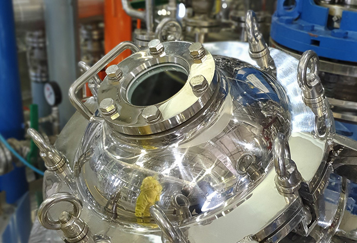

우리 (주)CMDL은 10년 이상 숙련된 인력과 자원을 바탕으로 OLED소재를 고순도로 합성하는 공정기술을 보유하고 있으며, 다른 전자재료에 대해서도 반응 및 정제 공정을 컨트롤하여 초고순도 화학제품을 고객에게 양산 공급할 수 있습니다.
(주)CMDL은 고객의 다양한 요구에 대응하고자 다양한 사이즈의 반응기를 보유하고 있으며, 청결한 양산 환경을 항상 유지하고 있습니다. OEM 비즈니스는 항상 고객과 함께 생각하고 고객의 입장에서 진행 과정입니다.
OEM
OEM 비즈니스

합성 의뢰
- - 홈페이지 연락 참조
- - 전화 혹은 이메일 의뢰
- - 양산 의뢰 미팅 일정 협의
양산 상담
- - 고객 요구사항 청취
- - 합성 스펙 제안
- - 가견적 전달
공정설계 시작
- - 고객 요구 원료 및
품질 수준 협의 - - 공정도 협의 및 확정
- - 계약서 체결
공정 평가
- - 공정평가 진행
- - 양산 과정 및 품질 수준 평가
- - 공정평가품에 대한 고객 평가
공정 확정
- - 공정에 대한 고객 평가
및 확정 - - 원료 수급처 확정
- - 납입사양서 체결
양산
- - 고객 입회하 초도품 양산
- - 품질평가 및 양산 후 추가
공정 진행
(고객 요청시)
사후 서비스
- - 지속적 품질 사항 교류
- - 고객 불만족 사항 협의
- - 지속적인 원자재 업체
관리 등